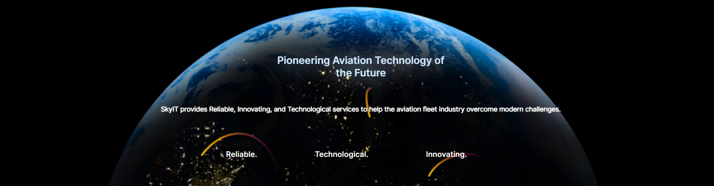

Komet
During the summer of 2023, I worked as an Android development intern at SkyIT, a tech company dedicated to transforming the aviation fleet industry with reliable and innovative services. As part of my role, I contributed to the development of an Android app called "Komet," which aimed to support aviation school operators. Komet offers a comprehensive fleet asset monitoring software and integrated aviation fleet management platform, customized to meet their specific requirements. By utilizing data-driven insights and real-time monitoring, Komet empowers fleet operators to optimize operations, cut costs, and achieve better performance.
During my internship, I had a broader role than just developing the Android app. Komet, which was developed using Kotlin, involved machine learning for accurately classifying audio data. I actively contributed to the ML prediction part, refining the algorithm and improving the model's performance. This experience enhanced my understanding of integrating machine learning into practical applications and emphasized the significance of teamwork and collaboration across different disciplines in complex projects like Komet.
During my internship, I gained valuable skills that significantly improved my professional abilities as follows.
- Developed and maintained the fleet management app for Android using Kotlin, resulting in a remarkable 20% increase in app performance, stability, and responsiveness through advanced code optimizations.
- Created data pipelines to effectively process audio data collected from aircraft, ensuring seamless integration with the application.
- Conducted extensive research to identify suitable data sources and ensure high-quality data collection.
- Optimized the neural network model to enhance accuracy up to 95%, demonstrating a keen focus on improving the application's predictive capabilities.
- Investigated and fine-tuned hyperparameters to improve the model's accuracy from 85% to an impressive 92%.
- Explored the feasibility of training the model with features extracted using spectrography alongside MFCC features.
- Converted the model into TFLite format for seamless integration with the Android application.
- Conducted in-depth research on enhancing model efficiency and preventing data drift to ensure the application remains up-to-date and reliable.
- Contributed to the seamless integration of the model into the application, enabling precise flight engine status predictions.
- Utilized principles of MLOps and cloud technologies to ensure scalability and efficient model deployment.
- Actively collaborated in documenting the project's progress, findings, and methodologies.
- Implemented the MVVM architectural pattern, ensuring modular code organization and enabling the integration of complex fleet management features.
- Collaborated with cross-functional teams in agile sprints, adhering to Scrum methodologies and utilizing tools like Jira and Git for seamless project management and version control.
- Successfully deployed the application on the Google Play Store, adhering to all platform guidelines, and providing a user-friendly and intuitive UI for pilots to interact with effortlessly.